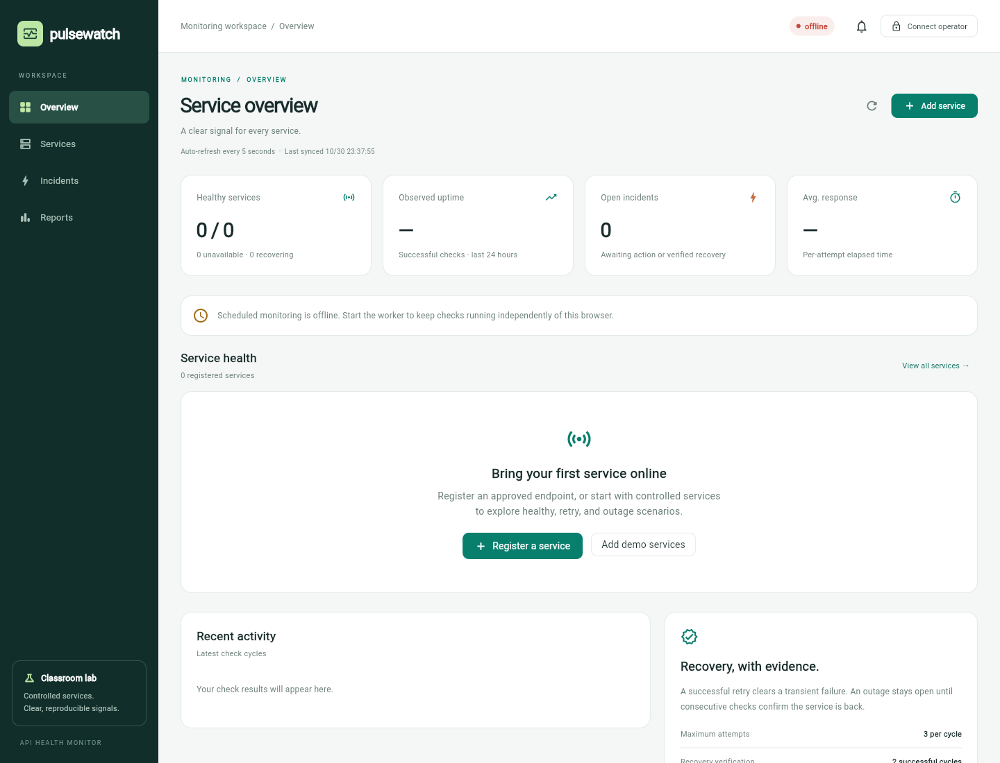
browser-20261030T153753Z / 01 desktop
Actual Flutter Web screenshots from controlled runs. Open an image for its full size. The evidence map and JSON records explain the scenario and limitations.
Evidence map · Setup and demonstration guide

browser-20261030T153753Z / 01 desktop
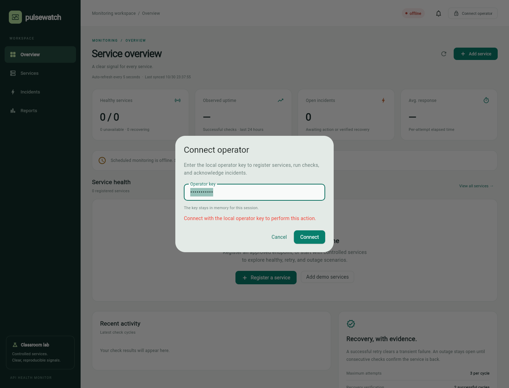
browser-20261030T153753Z / 02 unauthorized
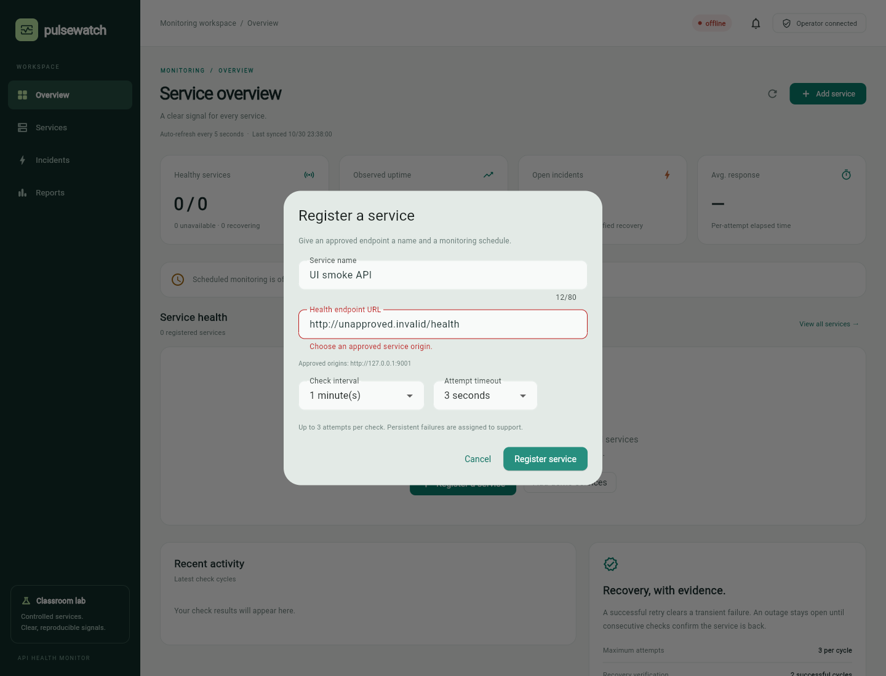
browser-20261030T153753Z / 03 invalid url
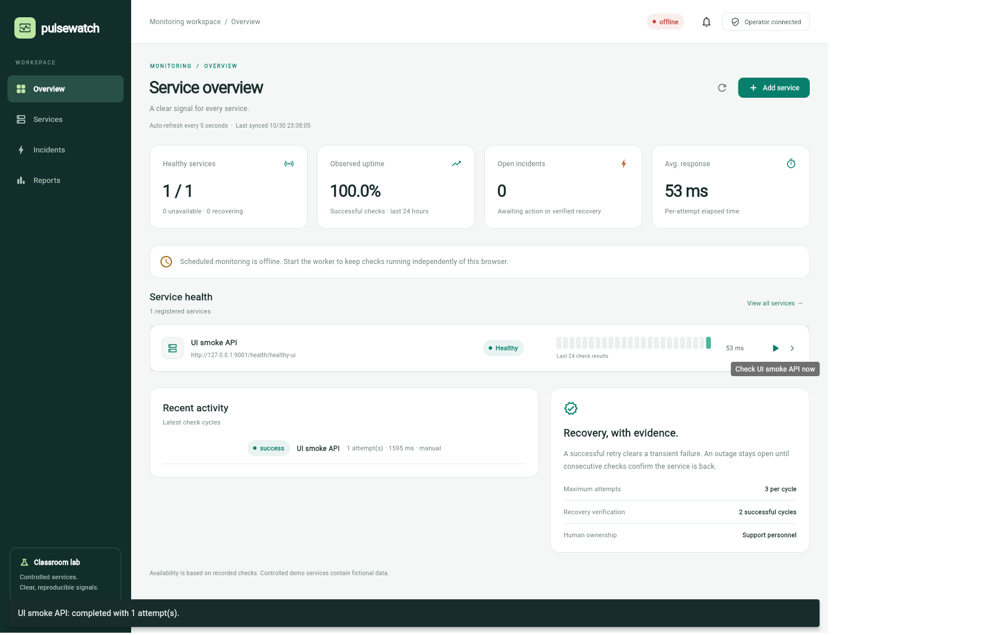
browser-20261030T153753Z / 04 normal path
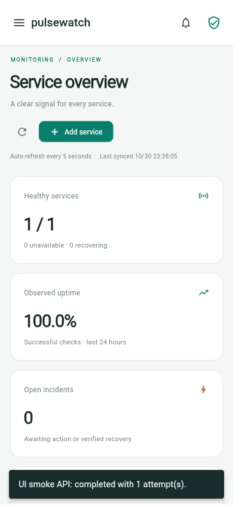
browser-20261030T153753Z / 05 narrow
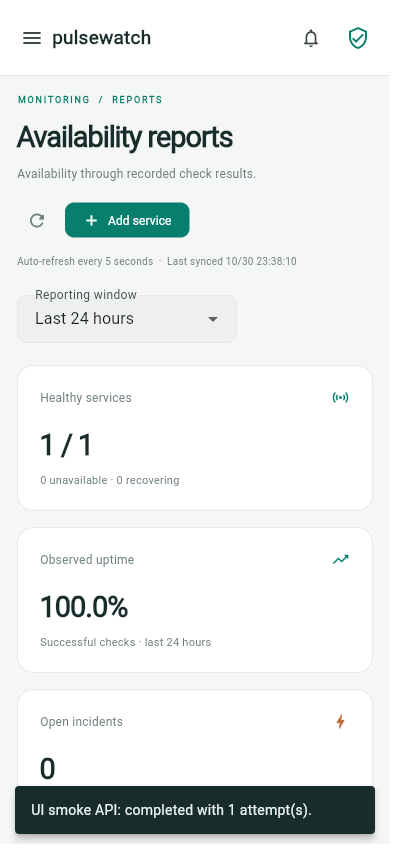
browser-20261030T153753Z / 06 narrow reports
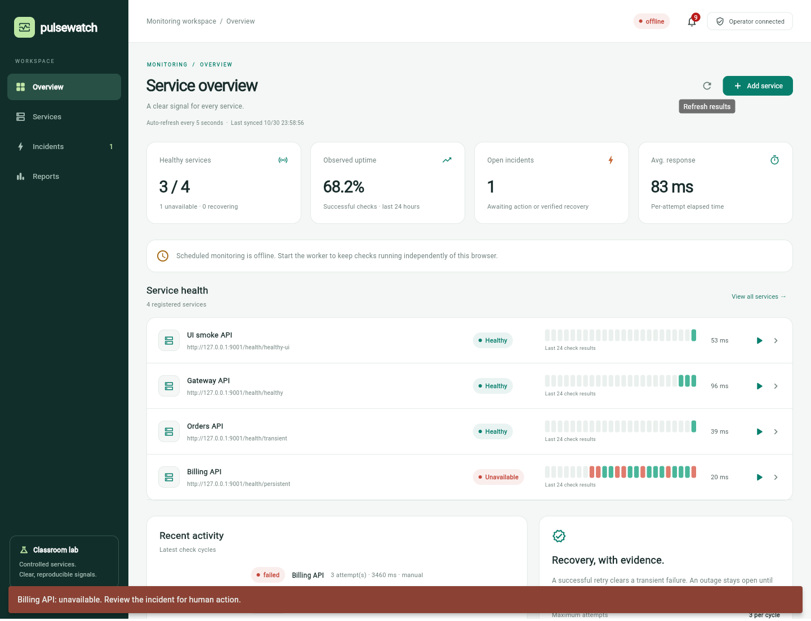
browser-recovery-20261030T155840Z / 01 outage overview
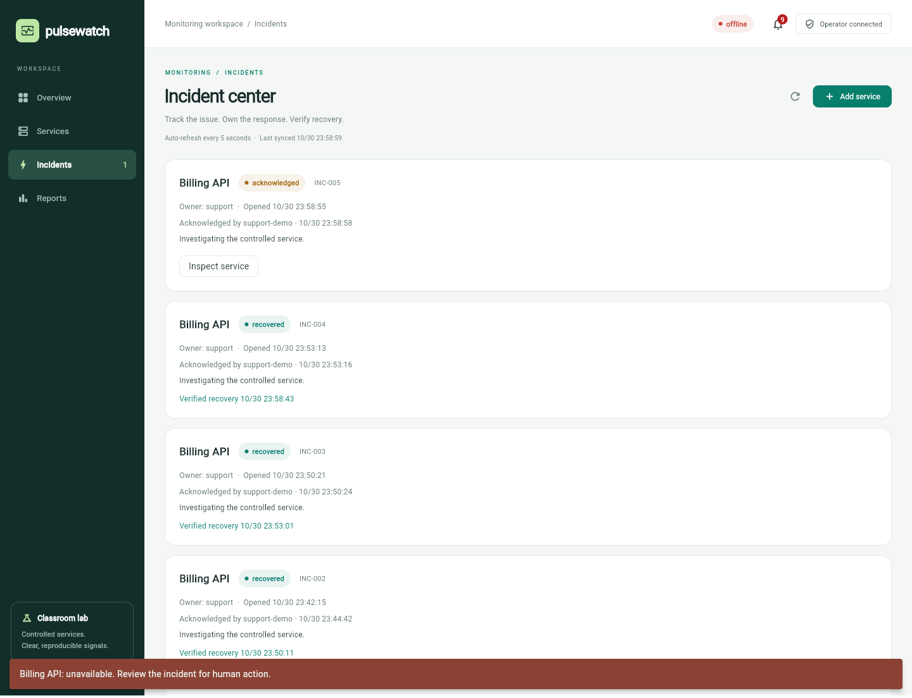
browser-recovery-20261030T155840Z / 02 human acknowledgement
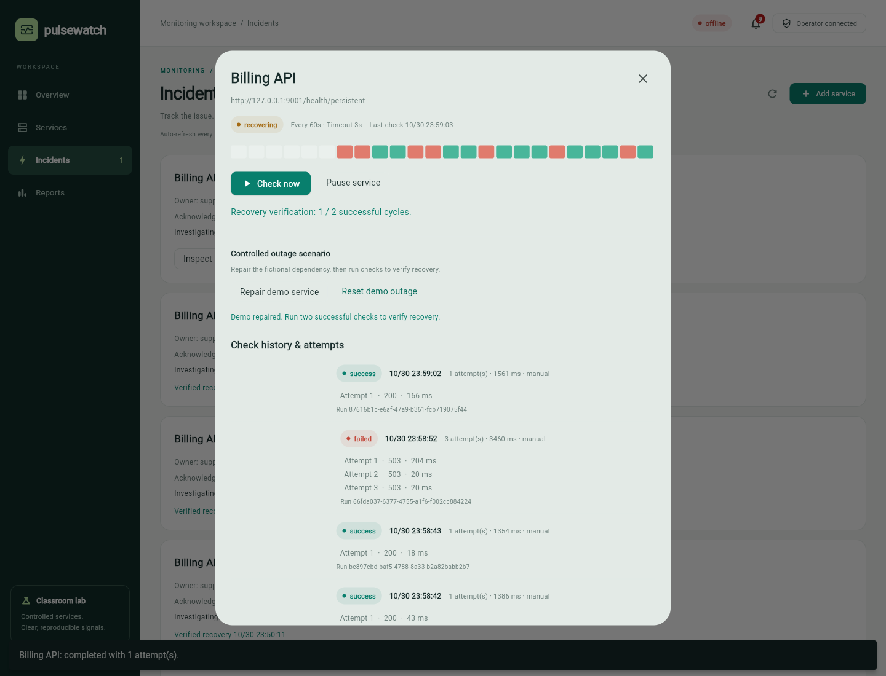
browser-recovery-20261030T155840Z / 03 recovery verification
browser-recovery-20261030T155840Z / 04 recovered history
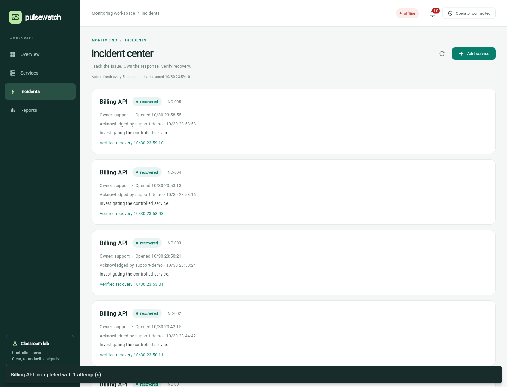
browser-recovery-20261030T155840Z / 05 recovered incidents
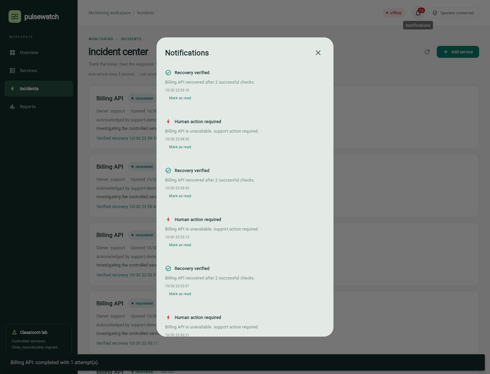
browser-recovery-20261030T155840Z / 06 notifications
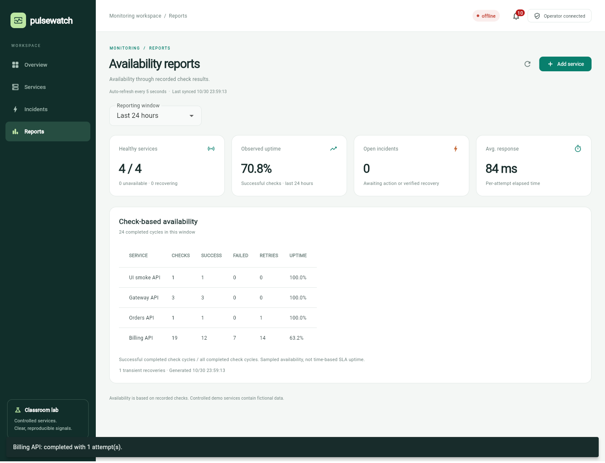
browser-recovery-20261030T155840Z / 07 desktop reports
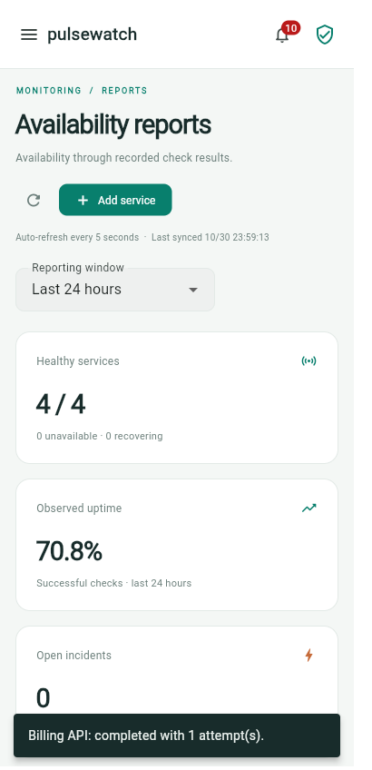
browser-recovery-20261030T155840Z / 08 narrow reports
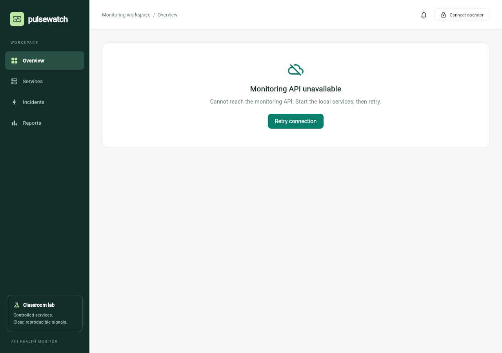
browser-recovery-20261030T155840Z / 09 api unavailable